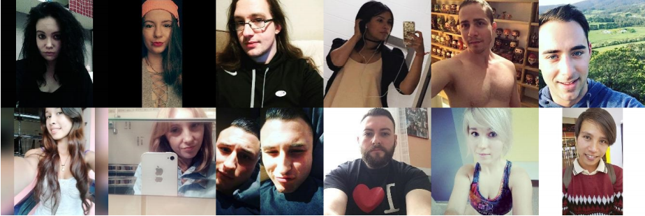
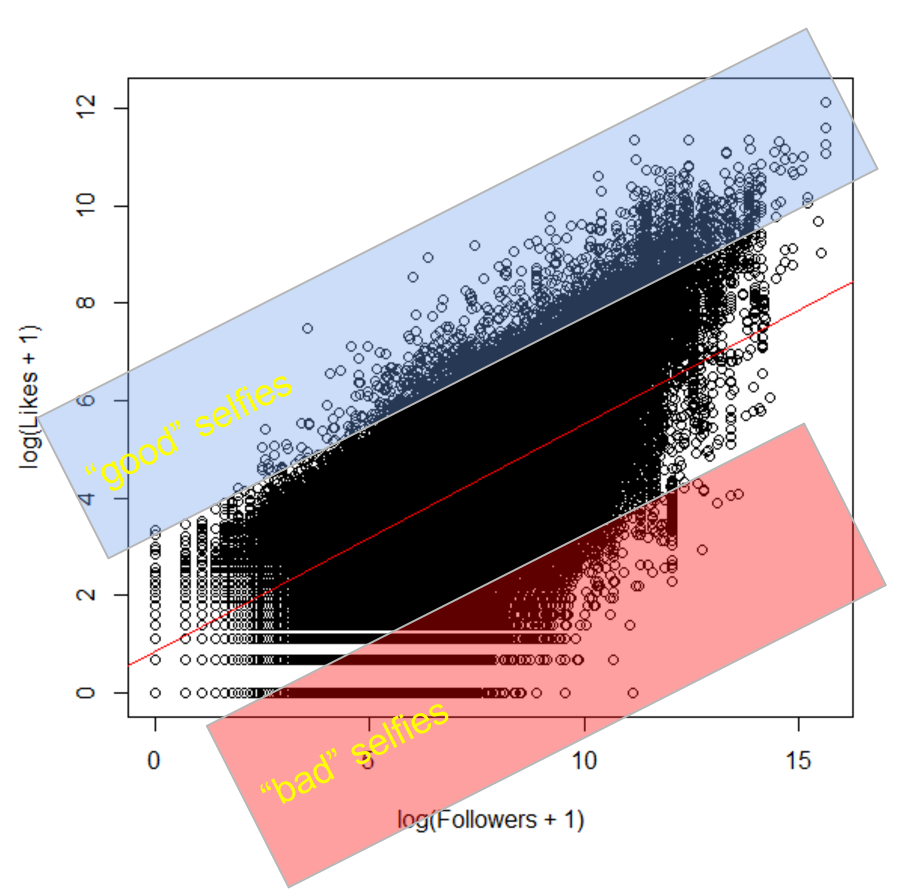
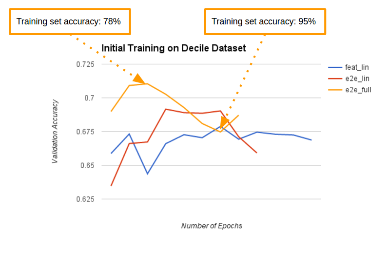

2017-07-26
Deep Learning on Selfies
Overview
Recently Andrej Karpathy has gained a lot of news coverage as the newly appointed director of AI at Tesla. This isn't the first time the Computer Vision community has been abuzz with Karpathy's name, however. In late 2015, Karpathy garnered internet fame within the Computer Vision community with a viral blog post titled What a Deep Neural Network thinks about your #selfie, in which he presented the results of training a deep neural network to classify selfies as either "good" or "bad."
In late 2016, I, along with fellow UVA students Colin Cassady and Abhimanyu Banerjee, garnered moderate attention from Professor Vicente Ordóñez and several of our classmates with an in-class presentation of our work replicating and improving upon Karpathy's famous selfie research. While Karpathy's seminal work on selfie likeability evaluation is hard to compete with, we did come up with some interesting insights and improvements to the state of the art of this very important field, specifically around dataset labeling and construction, which I will present below.
In fact, as we came to realize by the end of our research, the major challenge of using deep learning on #Selfies is not the deep learning itself, but rather it is the construction of a meaningful dataset to train the network. In the "real world" of Instagram, users don't live in a bubble, objectively rating images as "good" or "bad." Rather, they double-tap and scroll on their smartphones in a rich social photography experience that involves a complex follower system, text-based comments, and lots of other external factors (like not wanting your friend to see you liked a post by his or her ex, no matter how artistic the lighting was!).
If you want to take a deep dive into our project (or if you simply find the format of this post to be too conversational and engaging), please feel free to take a look at the original paper. I should warn you, however, that it was not written with formal peer review or publication in mind!
Nice #Selfie

At the time of our research, Instagram boasted over 300 million daily users (the number is likely even higher, now), and let me tell you, they upload, view, and "like," a lot of #Selfies. While a host of factors can influence the popularity of any photo on Instagram, #Selfie or not, we were specifically interested in the extremely low classification accuracy of Karpathy's model, which was only able to guess the likeability of an image 6 times out of 10 (randomly guessing would be right 5 in 10 times!). While factors like the image description, follower demographics, and context of the post overall likely have a great effect on the number of likes that the post eventually receives, my groupmates and I thought that the content of the image itself must account for at least a little more than a 10% predictive edge on the likeability of the post. After all, if the content barely matters, why do we spend so much time framing the perfect shot?
To get to the bottom of this conundrum, we decided to replicate and extend Karpathy's work, which meant downloading a lot of #Selfies. We grabbed about half a million of them (as they were posted over the course of just a few days), and circled back a week later to see how many likes they had received. While we didn't look into the specific numbers on this, anyone who has used Instagram knows that most every photo receives almost all of its lifetime likes in the first few days after being posted, and the fact that we counted likes exactly one week after upload put every photo on a level playing field. After collecting these #Selfies, we used the Dlib library to filter out images that did not contain exactly one face.
The good, the bad, and the ugly
Armed with half a million #Selfies, we were ready to fire up our GPUs and train some deep networks... or so we thought. The niggling issue, which actually turned out to be the crux of this work, was converting all of the metadata (likes, hashtags, number of followers, etc.) into a binary label of "good" or "bad." Karpathy's approach was to bin photos into batches of 100 by followers (thus eliminating the big issue of more followers = more likes), label the top half as good and the bottom as bad, and move on to training a network end-to-end. We thought, "is the 65th best selfie in one batch of 100 really all that different from the 35th best in a different batch?" Additionally, we wondered why it was necessary to use a binning method to counteract the effects of followers. Couldn't we just score images based on something like likes per follower? Well, as it turns out, there is often little difference between the actual photos of two posts that receive vastly different numbers of likes even when both posters have roughly the same number of followers, and this noisiness gets worse as you go away from the extremes.
Having figured this out, we did something that would make any self-respecting statistician, data scientist, or machine learning researcher at least a little bit queasy. We threw out 80% of our data. Worse yet, we threw out the middle 80% of our data, and worked only with the outliers. The outliers! But it worked well for us, because within our corpus of 500k selfies, there are good selfies that trigger a disproportionately high number of likes (normalized by follower count), bad selfies that trigger a disproportionately low number of likes (normalized by follower count), and then there are a lot of selfies in the middle whose middling quality doesn't really affect the number of likes the post receives at all. This metadata in this "middle zone" is noisy, ugly, and provides little useful information to any person or deep neural network trying to predict photo likeability. Accordingly, we just tossed it out the window, and opted to work with a dataset of about 2% the size of the one Karpathy used to train his selfie classifier.

In terms of the specifics of turning our unlabeled 500k selfies into a useful dataset of 30k training images and 10k validation images of "known" likeability, we simply looked at the order of magnitude of likes versus the order of magnitude of followers, saw that there is a roughly linear relationship between these two quantities, and chose the top and bottom 10% of images as those who most outperformed or underperformed the expected number of likes for that number of followers. Although these extremes are still subject to the issues of non-image factors affecting the number of likes a post receives, we found that they were less subject to these factors than those in the middle.
Training, at last!
Having whittled our training dataset down to a meager 30k #Selfies, we opted to use a pre-trained network that had already learned basic image features from its experience classifying millions of images from the ImageNet database. Specifically, we grabbed an off-the-shelf set of pretrained weights for the VGG-16 network, chopped off the final layer (which classifies an image as one of a thousand different categories), and put on a simple binary classification layer. We then retrained the model to classify selfies (by optimizing the model's binary cross-entropy via stochastic gradient descent with momentum, l2 regularization, and dropout, which is the same approach and configuration used in the original work that created VGG-16).

Interestingly enough, the regularization and dropout used on the ImageNet challenge were not even enough to prevent rampant overfitting on our small and very noisy dataset. Without these anti-overfitting measures, it only took a handful of epochs (iterations over the dataset), for the out-of-sample classification accuracy of the model to plummet, even while the in-sample accuracy shoots to the moon, as we can see from the graph above. Even with these measures in place, the model kept overfitting its way to poorer performance, just as a slower rate (see the original paper for all the graphs and discussion).
Results and takeaways
In the end, we were able to achieve 72% accuracy at predicting selfie likeability with a deep neural network, which represents over a 25% reduction in error rate compared to Karpathy's earlier work. However, this comparison is somewhat unfair, considering that just like Karpathy we used a VGGNet pretrained on ImageNet. What drove this difference is not the use of a better model or training regimen, but the creation of a dataset containing images with more accurate label's than Karpathy's. In fact, Colin and I took some time to each hand-label 50 images from our dataset, and together we averaged only 69% accuracy at matching the labels assigned by Instagram likes. While we didn't repeat this process for images in the "middle zone" that we discarded, it is not unreasonable to expect an even larger disagreement between human-judged quality and social-media-assigned popularity where the number of likes received is on the same order of magnitude as a "typical" post by a user with that many followers. In sum, we didn't so much beat Karpathy's results, but rather we found that to label good and bad selfies accurately, one must not simply draw the line in the middle, but rather look to the extremes. Our network would likely have much lower accuracy on Karpathy's noisier dataset, and likewise his network would likely do as well as ours on our cleaner dataset. Additionally, we also showed that it takes much, much less data (30k images vs 2M) to fine-tune a deep neural net when you craft an effective dataset.
While any deep-learning-powered research into Instagram selfies is, by nature, somewhat tongue-in-cheek, there definitely does exist a valuable takeaway from this project. In the real world, well-labeled data is often hard to find. While deep neural networks are finicky, complex, and interesting beasts, one must remember that diving deep and exploring, filtering, and even indiscriminately discarding bad data can be even more important than spending time taming and training deep neural nets. In the real world, end-to-end understanding of not only the tools at hand, but also the task itself can be the difference between success and failure.